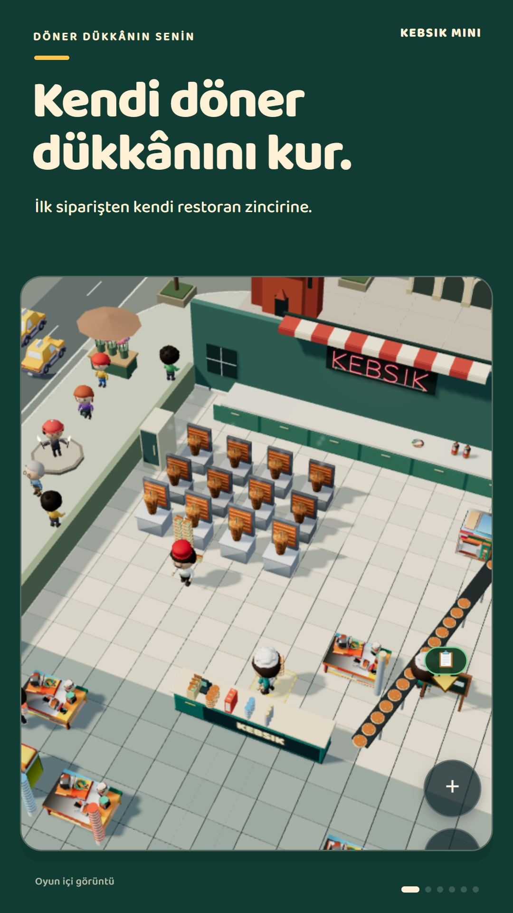
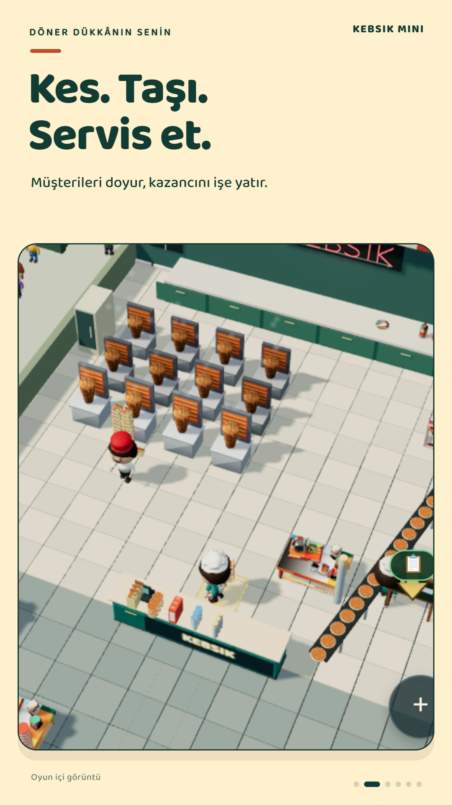
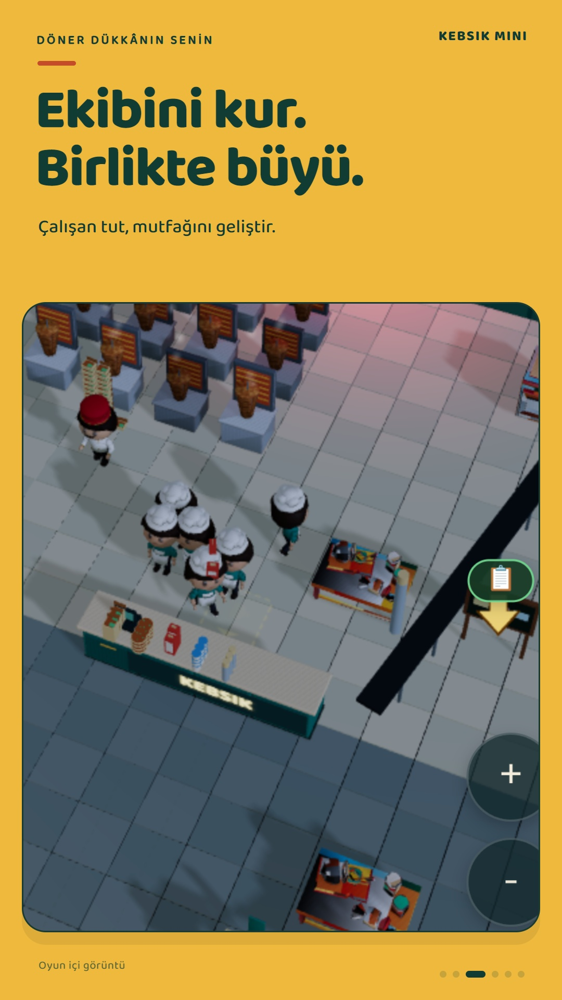
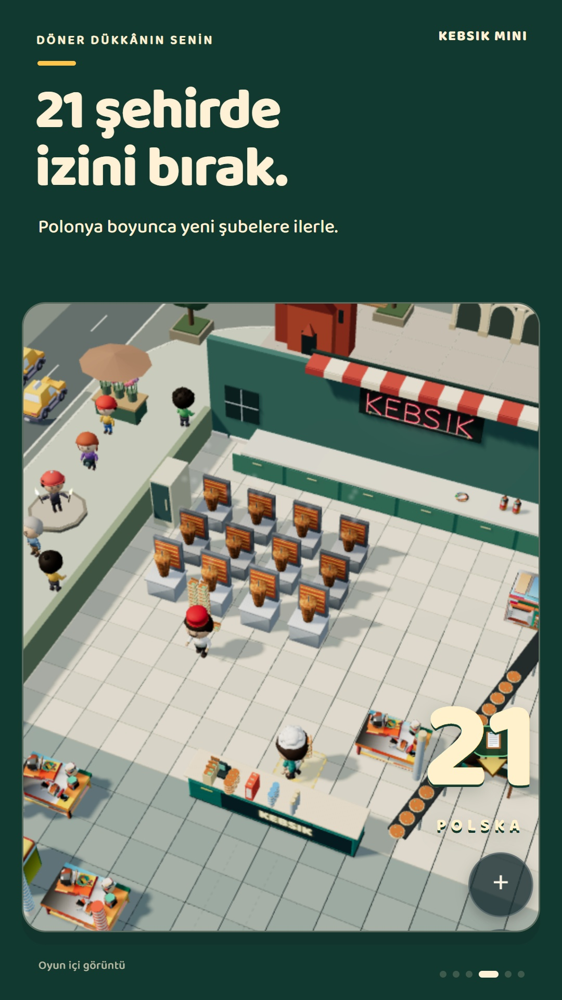
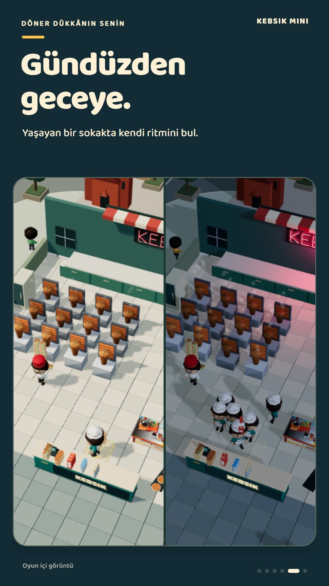
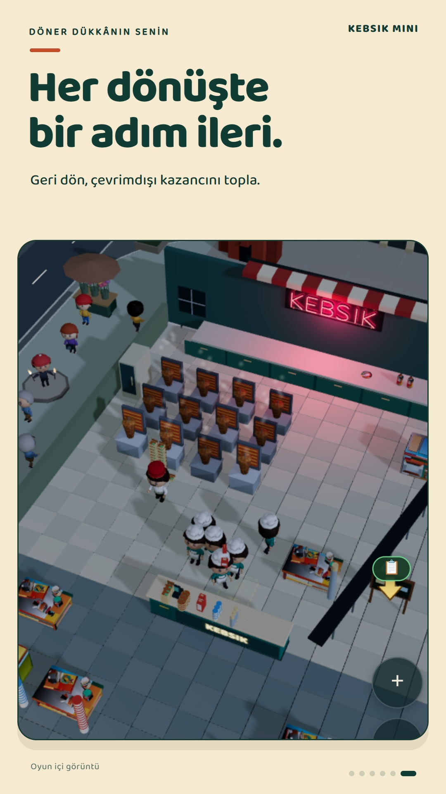

Kendi döner dükkânının hikâyesi
Küçük dükkân. Büyük hedefler.
Eti kes, müşterilere servis et ve kazancını dükkânına yatır. Ekibini kur; Polonya’nın 21 şehrine uzanan rotada kendi restoran zincirini büyüt.
Android testine katıl
Android testine katıl
0.1.53 sürümü kapalı testte yayında. Grupta, test sayfasında ve Play Store’da aynı Google hesabını kullan.
App not available?
“App not available” görürsen grup üyeliğini ve Google hesabını kontrol et. Yeni üyeliğin tanınması zaman alabilir. Daha önce dahili teste katıldıysan önce o testten ayrıl.





